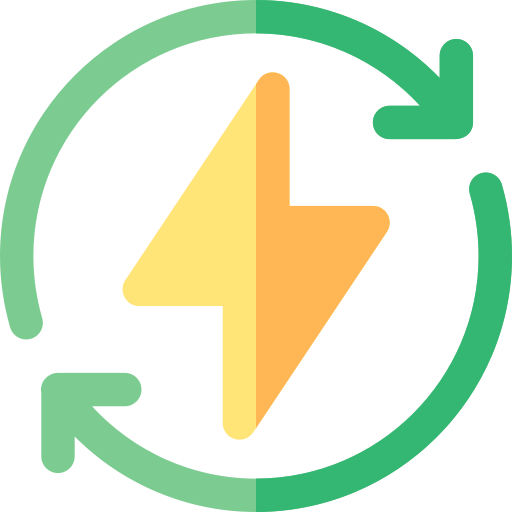

<div class="card box-shadow card-status-{{uptimeSeverity}}">
  <div class="card-block">

    <div class="card-title">
      
      {{'WIDGETS_TITLE.CLOUD_STATUS' | translate}}
    </div>

    <app-loading [isLoading]="isLoading"></app-loading>

    <p class="card-text-content" *ngIf="uptimeSeverity === 'success'">
      No incidents to report on Cloud's Infrastructure
    </p>

    <p class="card-text-content failing-infras-content text-nowrap"
       *ngIf="uptimeSeverity && uptimeSeverity !== 'success'">
      <span *ngFor="let failingInfra of infras | filterBy:{status_public: 1}; let isLast = last">
        {{failingInfra.description}}<span *ngIf="!isLast">, </span>
      </span>

      <span class="details-link">
        <a [routerLink]="'/status'">
          <span class="icon-arrows-right"></span> See details
        </a>
      </span>
    </p>

  </div>
</div>
